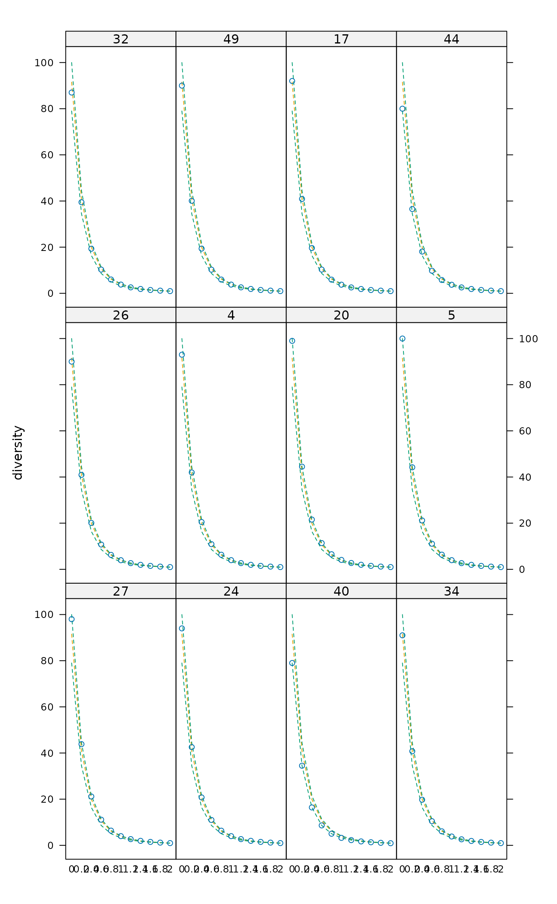

Tsallis Diversity and Corresponding Accumulation Curves
tsallis.RdFunction tsallis find Tsallis diversities with any scale or the corresponding evenness measures. Function tsallisaccum finds these statistics with accumulating sites.
tsallis(x, scales = seq(0, 2, 0.2), norm = FALSE, hill = FALSE) tsallisaccum(x, scales = seq(0, 2, 0.2), permutations = 100, raw = FALSE, subset, ...) # S3 method for tsallisaccum persp(x, theta = 220, phi = 15, col = heat.colors(100), zlim, ...)
Arguments
| x | Community data matrix or plotting object. |
|---|---|
| scales | Scales of Tsallis diversity. |
| norm | Logical, if |
| hill | Calculate Hill numbers. |
| permutations | Usually an integer giving the number
permutations, but can also be a list of control values for the
permutations as returned by the function |
| raw | If |
| subset | logical expression indicating sites (rows) to keep:
missing values are taken as |
| theta, phi | angles defining the viewing
direction. |
| col | Colours used for surface. |
| zlim | Limits of vertical axis. |
| ... | Other arguments which are passed to |
Details
The Tsallis diversity (also equivalent to Patil and Taillie diversity) is a one-parametric generalised entropy function, defined as:
$$H_q = \frac{1}{q-1} (1-\sum_{i=1}^S p_i^q)$$
where \(q\) is a scale parameter, \(S\) the number of species in
the sample (Tsallis 1988, Tothmeresz 1995). This diversity is concave
for all \(q>0\), but non-additive (Keylock 2005). For \(q=0\) it
gives the number of species minus one, as \(q\) tends to 1 this
gives Shannon diversity, for \(q=2\) this gives the Simpson index
(see function diversity).
If norm = TRUE, tsallis gives values normalized by the
maximum:
$$H_q(max) = \frac{S^{1-q}-1}{1-q}$$
where \(S\) is the number of species. As \(q\) tends to 1, maximum is defined as \(ln(S)\).
If hill = TRUE, tsallis gives Hill numbers (numbers
equivalents, see Jost 2007):
$$D_q = (1-(q-1) H)^{1/(1-q)}$$
Details on plotting methods and accumulating values can be found on
the help pages of the functions renyi and
renyiaccum.
Value
Function tsallis returns a data frame of selected
indices. Function tsallisaccum with argument raw = FALSE
returns a three-dimensional array, where the first dimension are the
accumulated sites, second dimension are the diversity scales, and
third dimension are the summary statistics mean, stdev,
min, max, Qnt 0.025 and Qnt 0.975. With
argument raw = TRUE the statistics on the third dimension are
replaced with individual permutation results.
References
Tsallis, C. (1988) Possible generalization of Boltzmann-Gibbs statistics. J. Stat. Phis. 52, 479--487.
Tothmeresz, B. (1995) Comparison of different methods for diversity ordering. Journal of Vegetation Science 6, 283--290.
Patil, G. P. and Taillie, C. (1982) Diversity as a concept and its measurement. J. Am. Stat. Ass. 77, 548--567.
Keylock, C. J. (2005) Simpson diversity and the Shannon-Wiener index as special cases of a generalized entropy. Oikos 109, 203--207.
Jost, L (2007) Partitioning diversity into independent alpha and beta components. Ecology 88, 2427--2439.
See also
Plotting methods and accumulation routines are based on
functions renyi and renyiaccum. An object
of class 'tsallisaccum' can be used with function
rgl.renyiaccum as well. See also settings for
persp.
Examples
#> 0 0.2 0.4 0.6 0.8 1 1.2 1.4 1.6 #> 36 91 40.76595 19.77916 10.481929 6.081803 3.846109 2.625076 1.910150 1.463936 #> 19 108 47.27018 22.32602 11.498387 6.492802 4.013094 2.692466 1.936696 1.473828 #> 7 81 37.47840 18.73414 10.172688 6.004908 3.836811 2.631757 1.918091 1.469869 #> 20 99 44.47873 21.56561 11.366723 6.530095 4.077327 2.746035 1.974163 1.498140 #> 44 80 36.52805 18.09206 9.782209 5.776652 3.705016 2.555595 1.873754 1.443791 #> 50 92 41.30206 20.08829 10.663128 6.187254 3.906616 2.659292 1.929248 1.474476 #> 2 83 38.06254 18.90957 10.230614 6.028061 3.848471 2.638667 1.922477 1.472692 #> 29 85 38.51838 18.81994 10.009321 5.819419 3.688721 2.526664 1.847408 1.423613 #> 16 92 41.45601 20.19256 10.715725 6.210870 3.916821 2.663870 1.931567 1.475861 #> 48 90 40.88736 20.03984 10.677655 6.201632 3.913725 2.661754 1.929642 1.474180 #> 30 96 42.46822 20.35888 10.670374 6.133357 3.851598 2.617135 1.900131 1.455342 #> 40 79 34.49875 16.41508 8.624079 5.028357 3.234849 2.263379 1.692562 1.331193 #> 1.8 2 #> 36 1.169232 0.9648567 #> 19 1.172481 0.9655820 #> 7 1.173083 0.9672014 #> 20 1.187661 0.9748589 #> 44 1.157572 0.9578733 #> 50 1.174993 0.9679784 #> 2 1.174887 0.9683393 #> 29 1.143249 0.9481041 #> 16 1.175935 0.9686598 #> 48 1.174583 0.9676412 #> 30 1.162753 0.9602659 #> 40 1.087270 0.9137131#> 36 19 7 20 44 50 2 29 16 48 30 40 #> TRUE TRUE TRUE TRUE TRUE TRUE TRUE TRUE TRUE TRUE TRUE TRUEplot(x1)x2 <- tsallis(BCI[i,],norm=TRUE) x2#> 0 0.2 0.4 0.6 0.8 1 1.2 1.4 #> 36 1 0.8998669 0.8431295 0.8216927 0.8272622 0.8505725 0.8820846 0.9137994 #> 19 1 0.9079031 0.8537683 0.8315799 0.8347890 0.8554245 0.8846675 0.9147428 #> 7 1 0.9094899 0.8600339 0.8427936 0.8492653 0.8706729 0.8985570 0.9261475 #> 20 1 0.9168340 0.8714005 0.8563191 0.8638340 0.8853802 0.9124664 0.9383899 #> 44 1 0.8954397 0.8371683 0.8152612 0.8204162 0.8431126 0.8740718 0.9056624 #> 50 1 0.9036351 0.8503796 0.8315870 0.8385564 0.8618931 0.8922712 0.9221556 #> 2 1 0.9055048 0.8546877 0.8377974 0.8455660 0.8685692 0.8978637 0.9264249 #> 29 1 0.8987625 0.8378269 0.8104423 0.8098004 0.8281171 0.8569302 0.8885453 #> 16 1 0.9070033 0.8547937 0.8356888 0.8417570 0.8641446 0.8938075 0.9232641 #> 48 1 0.9106932 0.8602635 0.8414256 0.8466675 0.8676229 0.8957424 0.9239173 #> 30 1 0.8975551 0.8388546 0.8155960 0.8196218 0.8419326 0.8731640 0.9052902 #> 40 1 0.8544019 0.7656946 0.7230720 0.7171847 0.7382083 0.7754969 0.8189349 #> 1.6 1.8 2 #> 36 0.9407648 0.9611954 0.9754595 #> 19 0.9406572 0.9605041 0.9745226 #> 7 0.9493990 0.9669335 0.9791421 #> 20 0.9594192 0.9746101 0.9847059 #> 44 0.9330830 0.9544340 0.9698467 #> 50 0.9471031 0.9657020 0.9784999 #> 2 0.9501791 0.9678597 0.9800060 #> 29 0.9175446 0.9412749 0.9592583 #> 16 0.9479928 0.9664763 0.9791887 #> 48 0.9477911 0.9658285 0.9783927 #> 30 0.9331704 0.9547770 0.9702687 #> 40 0.8608104 0.8967433 0.9252791plot(x2)persp(mod1)